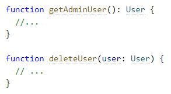

TypeScript is similar to JavaScript in that they have the same features,
but TypeScript then adds its own type system on top.
JavaScript does not check for
inconsistencies within assigned primitives, however TypeScript does.
Hopefully by the end of this brief overview you will gain at least a working knowledge
of TypeScript and be able to start using it effectively.
Consider the following block of code:
Using the syntax “user: User”, you declare that this JavaScript object conforms to the shape
of the new interface.
By putting the name in quotations (“Hayes”) you are assigning it as a string.
The id is assumed to be a number since no quotations are used. (600 != “600”).
When you are inconsistent, or just have an object that doesn’t match your provided interface,
you will get a warning that looks like this:
TypeScript, like JavaScript, supports classes and OOP. You can use an interface declaration with
classes like the below code block:
Interfaces can also be used to annotate parameters and return values:
TypeScript, as mentioned before, has all the features of JavaScript and then some.
This extends to primitive types as well.
Every Type Script has all of the primitive
types that are used within JavaScript then adds more.
This includes ‘any’(allows anything),
‘unknown’(ensure someone using this type
declares what the type is), ‘never’(it’s not possible that this type could happen),
and
‘void’(a function which returns undefined or has no return value).
Inference “knows” the type of the variable being created. See the line of code:
This is Types by Inference, TypeScript is inferring what is trying to be done.
The ‘let’ keyword is used to declare a local variable,
then the name of the variable
(helloWorld), and since “Hello World” is in quotations, TypeScript labels it as a string.
As stated before,
inference means that 600 and “600” are seen as different variables and
different variable types.
let value = “600”
return value + 2
let value = 600
return value + 2
The first code block will, because of inference, return 6002.
Whereas the bottom would return 602.
TypeScript allows you to use unions or generics to combine simple types into more complex types.
Here we see that a boolean is created without the term “boolean”. Just by using ‘ | ‘ in the
“true | false;” is enough.
This type of union is commonly used to describe a set of string
or number literals a value can be, for example:
This can also be used for handling different types:

Below is a table that shows the keyword “typeof”:
This can be very useful when dealing with different variable types within a single
function.
An array without generics could contain anything, whereas an array with generics can
describe the values that the array contains.